Generated: 2026-07-06T06:16:10.702Z
Live captures use the dev screenshot harness (VITE_ENABLE_SCREENSHOT_MOCKS=true) at the requested viewports. Figma PNGs are the @2x exports from .hermes-pipeline/20260705_232547/.
| View | Live | Figma reference | Notes |
|---|---|---|---|
| scheduling 1440×900 |
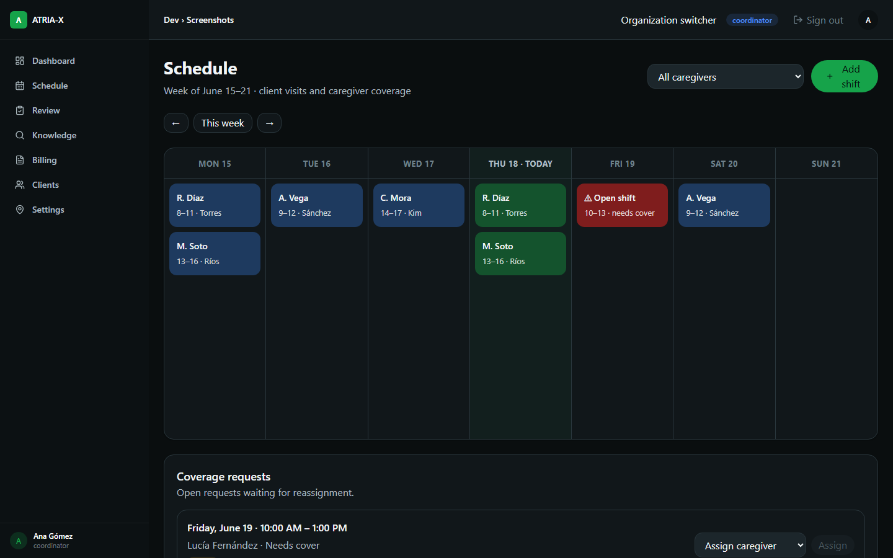 |
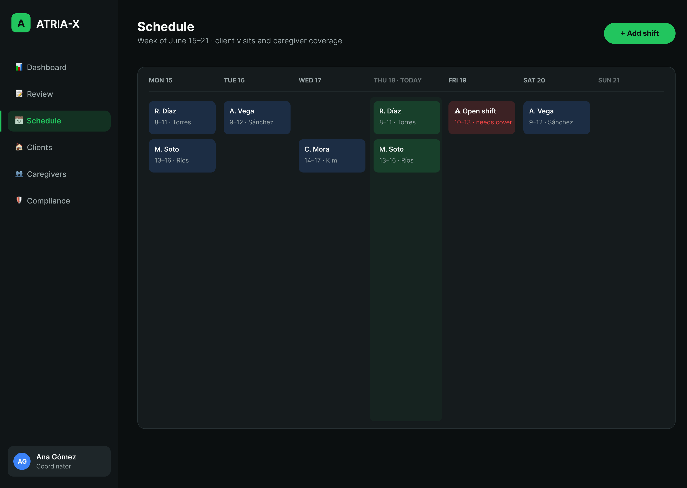 |
Live includes the current ATRIA-X sidebar nav, caregiver filter, week navigator, and open-coverage panel at the bottom. Shift card content and calendar week (Jun 15–21, Thu today) match the Figma reference. |
| shift-editor 1440×900 |
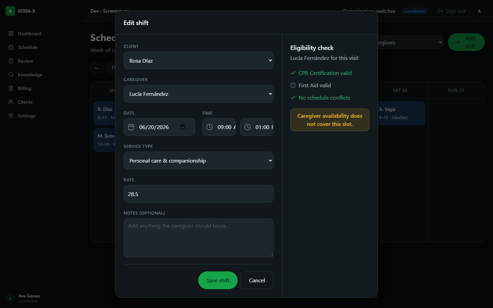 |
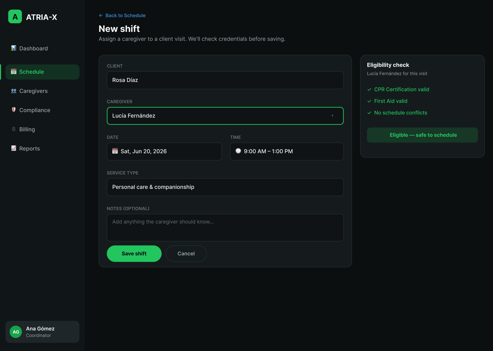 |
Live opens a blank “New shift” modal defaulting to the frozen “today” date. Figma shows the same modal pre-filled with the featured Saturday shift (Rosa Díaz / Lucía Fernández / Sat, Jun 20, 9 AM–1 PM). Form fields, labels, and eligibility panel layout match. |
| shift-packet 1440×900 |
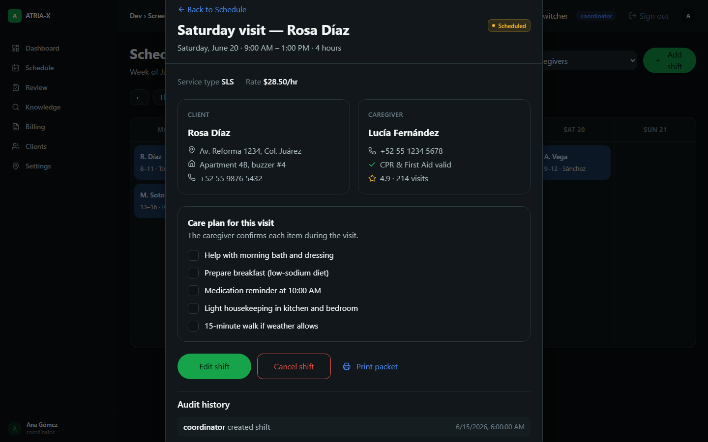 |
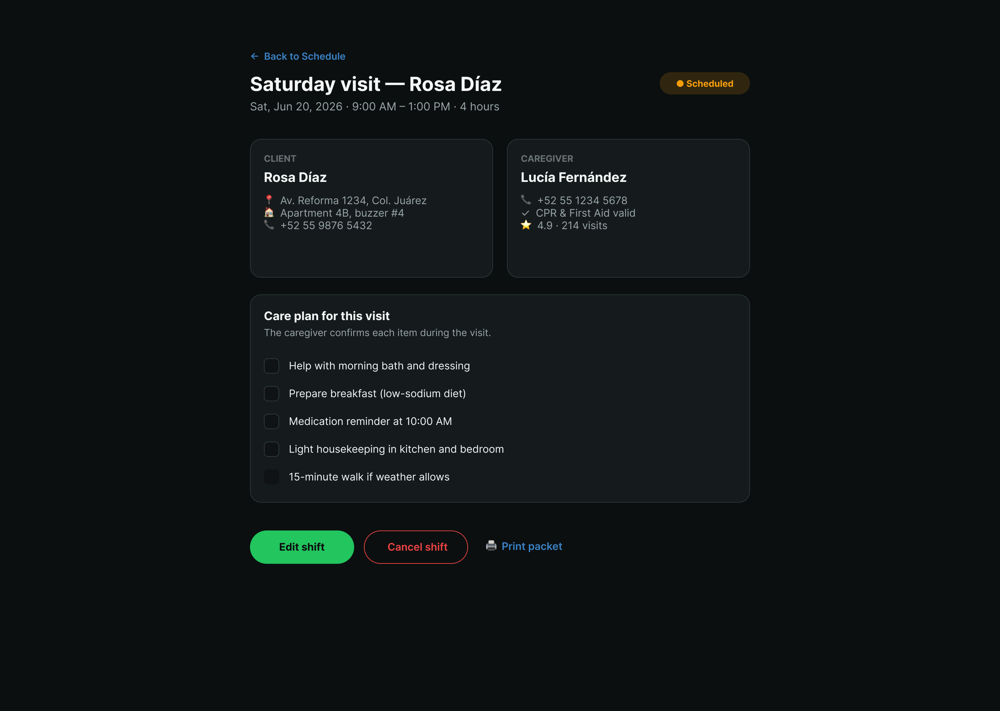 |
Live matches Figma: Saturday visit for Rosa Díaz, scheduled status badge, client/caregiver cards, care-plan checklist, and admin actions (Edit shift / Cancel shift / Print packet). Audit history is rendered from mock data. |
| coverage 1440×900 |
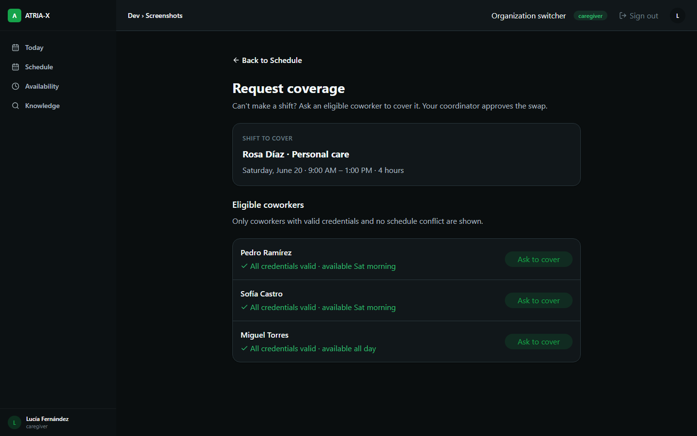 |
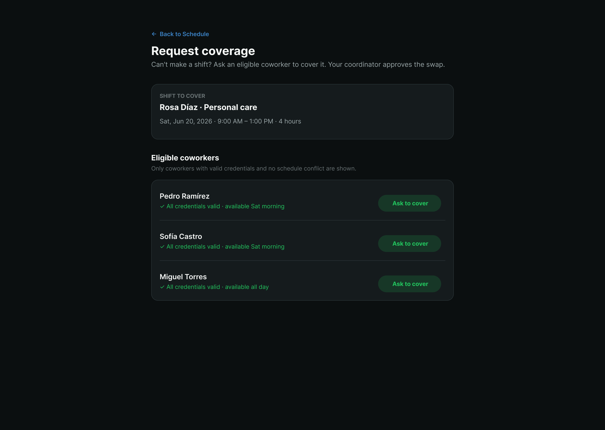 |
Coverage harness view is now wired to caregiver mode, matching the Figma reference: “Request coverage” title, shift-to-cover card, eligible coworkers list with “Ask to cover” buttons. |
| availability-mobile 390×844 |
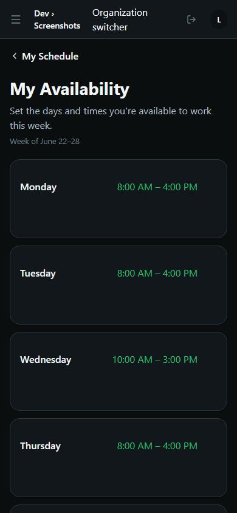 |
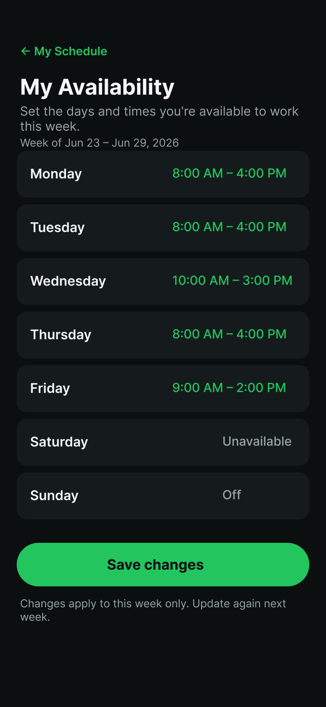 |
Live shows the mobile availability list with the same row structure and green time windows. The week label reflects the frozen date (Jun 22–28) versus the Figma caption (Jun 23–29); the day rows and windows match the mock data. |
| caregiver-schedule-mobile 390×844 |
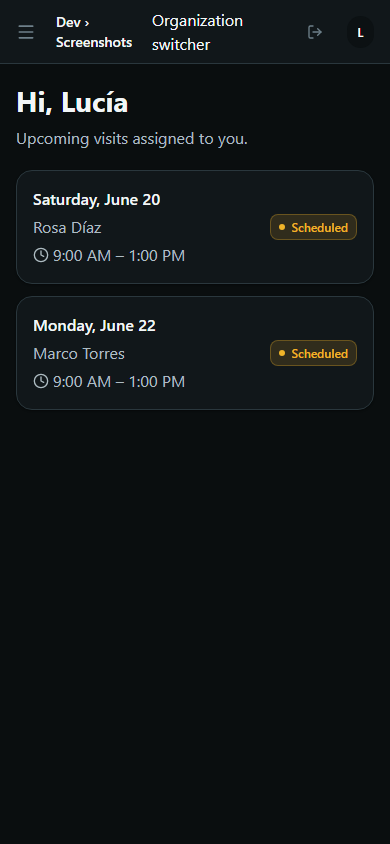 |
No reference PNG | No Figma reference PNG was supplied for /caregiver/schedule. Live capture shows the mobile caregiver schedule list with greeting, upcoming visit cards, and Scheduled status badges. |